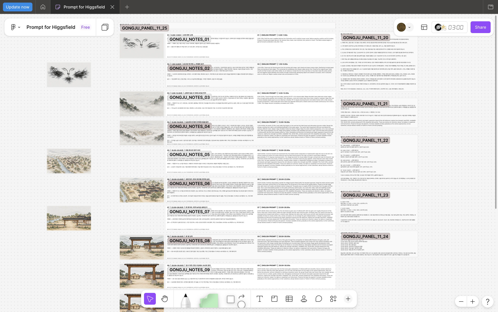
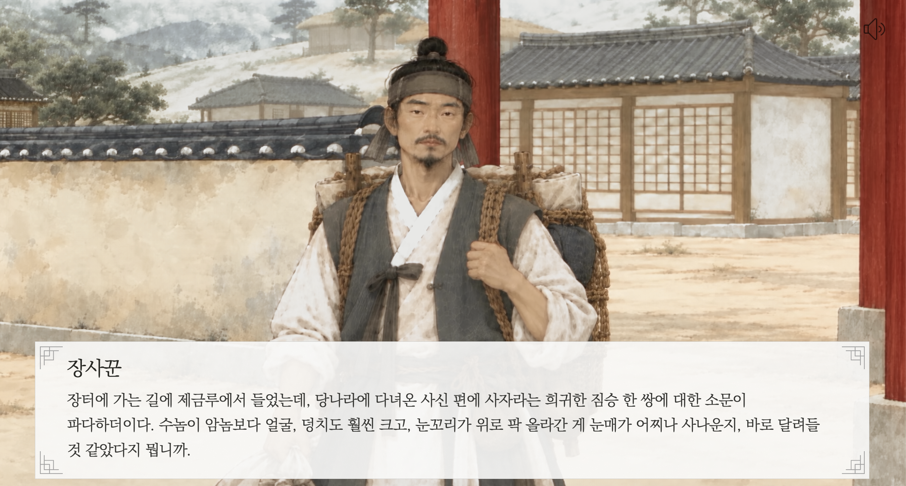

본문으로 건너뛰기
石
봉황동 석사자
기획과 제작으로
Story · 06
Higgsfield 영상 제작
480p 시험 렌더로 장면 연결을 확인한 뒤, 1080p 최종 영상을 제작했습니다.
최종 영상 자료

Higgsfield 영상 제작용 보드입니다. 각 장면의 참고 이미지, 시간대, 카메라 이동과 한·영 프롬프트를 함께 정리했습니다.

수묵화풍 인물과 풍경을 적용한 제작 화면입니다.